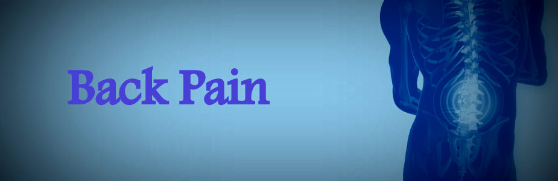

Spine Services
At Seven Hills Spine Center, we are dedicated to helping people of all ages, with a variety back, neck and spine conditions, lead pain free, healthy lives again. We provide comprehensive spine & neck surgery and spine care, from initial diagnosis through post-treatment and rehabilitation. If you are considering back or neck surgery, speak to one of our neurosurgery spine specialists first.
We treat all types of back, neck, spine and spine-related disorders ? from the more common to the most complex. We specialize in upper, mid and lower back pain , spinal deformity and scoliosis. We also have experts that treat spine fractures, spinal cord injuries, and tumors of the spine.
Recommended Doctors
- Name: Dr. Ramesh Sobti
Specialities: Neuro-Spine Surgery, Spine Evaluation, Trauma- Neuro Critical Care